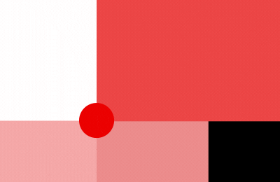

Ethics for Design * is only interactive on computer or tablet (horizontal). You can nevertheless see the documentary without interactivity via this link: vimeo.com/1541zfe16e .
During the documentary you can choose the size and therefore the importance that you give to each medium. To do this, click on the center point and drag it to resize the documentary as you wish ().